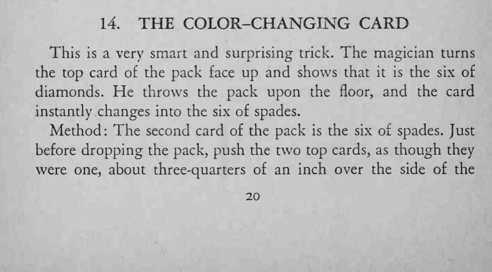
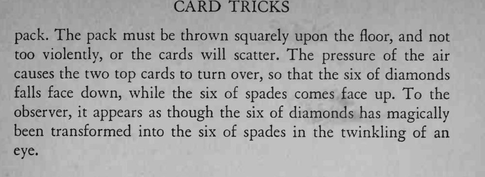

魔术师翻开顶牌，是方块 6；他把整副牌往地上一扔，落地时那张牌竟变成了黑桃 6。
牌堆要正着扔、力道适中，翻面的效果才干净漂亮。


This is a very smart and surprising trick. The magician turns the top card of the pack face up and shows that it is the six of diamonds. He throws the pack upon the floor, and the card instantly changes into the six of spades. Method: The second card of the pack is the six of spades. Just before dropping the pack, push the two top cards, as though they were one, about three-quarters of an inch over the side of the pack. The pack must be thrown squarely upon the floor, and not too violently, or the cards will scatter. The pressure of the air causes the two top cards to turn over, so that the six of diamonds falls face down, while the six of spades comes face up. To the observer, it appears as though the six of diamonds has magically been transformed into the six of spades in the twinkling of an eye.